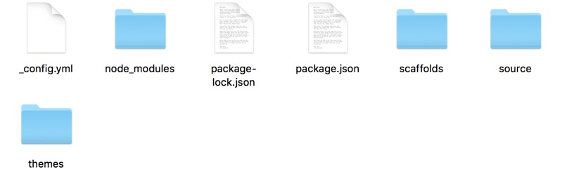

前言
这篇文章写了基于Hexo和GithubPages从零开始搭建
个人博客的步骤，主题配置选用Next。
1.博客环境配置
- 安装homebrew
1 | /usr/bin/ruby -e "$(curl -fsSL https://raw.githubusercontent.com/Homebrew/install/master/install)" |
安装git
1
brew install git
安装nodejs
1
brew install node
检查nodejs和git版本
1
2git --version
node -v安装Hexo
按照几个博客安装hexo都失败了，最后按照这个官方文档安装成功
Hexo文档https://hexo.io/zh-cn/
安装完可以看到自定义的博客文件夹内的文件：

文件功能介绍_config.yml
网站的 配置 信息，您可以在此配置大部分的参数。
package.json
应用程序的信息。
scaffolds
模版 文件夹。当您新建文章时，Hexo 会根据 scaffold 来建立文件。
Hexo的模板是指在新建的markdown文件中默认填充的内容。例如，如果您修改scaffold/post.md中的Front-matter内容，那么每次新建一篇文章时都会包含这个修改。
source
资源文件夹是存放用户资源的地方。除_posts 文件夹之外，开头命名为 _ (下划线)的文件 / 文件夹和隐藏的文件将会被忽略。Markdown 和 HTML 文件会被解析并放到 public 文件夹，而其他文件会被拷贝过去。
themes
主题 文件夹。Hexo 会根据主题来生成静态页面。
2.搭建博客
Hexo几个重要命令
generate
$ hexo generate
生成静态文件。
简写为：
$ hexo g
publish
$ hexo publish [layout]
发表草稿。
server
$ hexo server
启动服务器。默认情况下，访问网址为： http://localhost:4000/。
deploy
$ hexo deploy
部署网站。
该命令可以简写为：
$ hexo d
输入命令：
1 | hexo g |
打开http://localhost:4000
可以看到如下界面
3.选择主题
首先在Hexo官方主题页中下载
https://hexo.io/themes/
找到一个自己喜欢的，然后点进去，找到Github链接,
我是用的这个主题，点进去按照下面的安装步骤安装即可。
配置的时候出现了好几个错误，
主要是权限的错误，还有hexo命令错误，（命令一定要在hexo自定义的那个文件内执行，先cd folder）百度google解决了，最后生成的画面如下
4.关联Github
1.注册github，创建名为username.github.io的仓库，如
2.进入myblog文件内找到_config.yml
在最后一行把deploy后面改为：1
2
3
4deploy:
type:git
repository: https://github.com/zibinanhai/zibinanhai.github.io.git
branch: master
其中zibinanhai/zibinanhai.github.io改为自己用户名
注意：所有的冒号后面都要确认有一个空格，否则会出现类似这样的错误：
FATAL bad indentation of a mapping entry at line 82, column 13:
repository: https://github.com/zibinanhai/ …
3.执行1
2hexo g
hexo d
若执行hexo g出错则执行1
npm install hexo --save
若执行hexo d出错则执行1
npm install hexo-deployer-git --save
错误修正后再次执行hexo g和hexo d上传到服务器。
（我执行这两个命令失败，在前面加了sudo后解决）
注意：如果是第一次关联github，会出现这个画面：
按照提示输入github邮箱和用户名：1
2git config -globaluser.email"you@example.com"
git config --global user.name "Your Name"
然后继续hexo d，输入用户名和密码：1
2username for 'https://github.com':
password for 'https://github.com':
hexo d执行成功后便可通过https://zibinanhai.github.io访问博客，和http://localhost:4000本地内容相同。
5.添加ssh keys
添加ssh keys更新博客的时候不用输入用户名和密码，输入以下命令：1
ssh-keygen -t rsa -C "your_email@exampl"
成功运行后可以看见
然后进入文件夹
打开
把里面的信息复制进GitHub的Add ssh key路径GitHub->Setting->SSH keys->add SSH key中即可。
Title里填写任意标题，将复制的内容粘贴到key中，点击Add key完成添加。
出现这个页面就OK
6.绑定个人域名
目前博客的地址是username.github.io，我们也可以绑定自己的域名。
首先现在阿里云等网站买一个域名
第一次买域名的同学注意，域名买了后先要进行实名认证后才能使用，刚开始DNS一直错误我还不知道怎么回事。
实名认证好了以后，进入博客项目中的source文件夹，添加CNAME文件，里面写上自己购买的域名。1
2cd myblog/source
echo lizehao.info > CNAME
然后清理缓存发布1
2sudo hexo clean
sudo hexo g -d
然后进入github中博客项目的setting界面，看底下Githubpages，看域名是否正确，如下图
最后在购买域名的网站里，添加一条记录即可
记录值写上自己github博客默认地址。
过20分钟后打开自己的域名就好了。
7.Next配置
关于主题配置参考Next官网和一些博客，写的详细些：
http://theme-next.iissnan.com/
https://segmentfault.com/p/1210000009545001/read
注意：配置cofig文件时冒号后面要加一个空格，否则会出错1
can not read a block mapping entry; a multiline key may not be an implicit key at line 14, column 1: